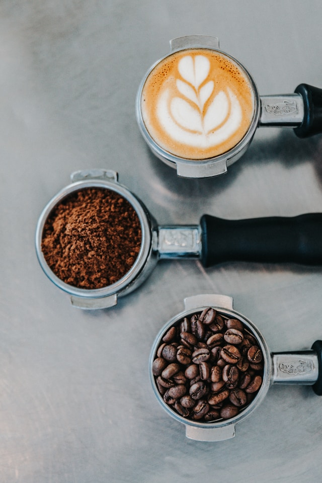

Ljusrostad kaffe
Ett friskt och balanserat kaffe med fruktiga toner och en lätt syra. Perfekt för dig som gillar ett aromatiskt kaffe.
Pris: 129 kr
Här hittar du noggrant utvalda kaffebönor och tillbehör för dig som älskar en riktigt bra kopp kaffe.
Vi rostar och väljer ut bönor med omsorg, från ljusrostat till mörkrostat, så att du kan hitta precis den smak som passar dig. Utöver bönor hittar du också det du behöver för att brygga den perfekta koppen hemma.

Kolla in våra produkter nedan!
Ett friskt och balanserat kaffe med fruktiga toner och en lätt syra. Perfekt för dig som gillar ett aromatiskt kaffe.
Pris: 129 kr

Ett intensivt och fylligt kaffe med rökiga toner av mörk choklad. En klassiker för dig som gillar ett starkt kaffe.
Pris: 139 kr

En pålitlig kaffemaskin för dig som vill brygga jämn, smakrik kaffe hemma varje morgon.
Pris: 899 kr

Bryggning helt utan pappersfilter ger ett fylligare kaffe med mer kropp och naturliga oljor kvar i smaken.
Pris: 249 kr

Eleganta glasmuggar som visar upp kaffets färg. Säljs styckvis, perfekt för din morgonrutin.
Pris: 99 kr